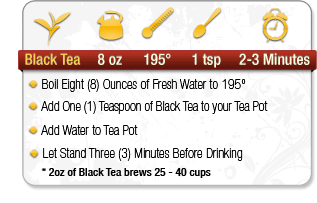
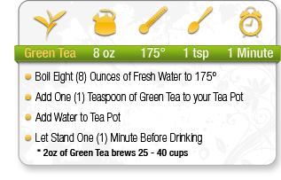
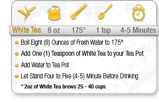
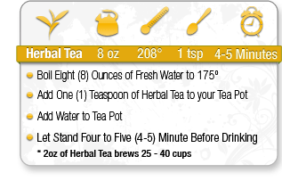
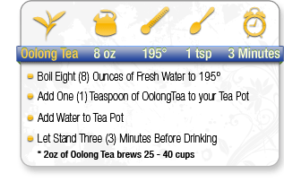
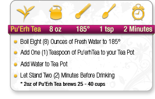

Black Tea
Black tea is known to banish fatigue, stimulate mental alertness, and raise energy levels. It has been shown to reduce stress hormone levels and acts as a nerve sedative, frequently relieving headaches.
Black tea is known for its antiviral and antibacterial properties. It can be topically applied to cuts, bruises and burns, and is famous for its sunburn relief and has been shown to have a positive effect on preventing tooth decay and gum disease.
 Nurtures Digestive Health
Nurtures Digestive Health
 Helps Naturally Reduce Stress
Helps Naturally Reduce Stress
 Promotes Balance And Harmony
Promotes Balance And Harmony
 Well-Known To Revitalize, Invigorate, And Energize The Senses
Well-Known To Revitalize, Invigorate, And Energize The Senses

Green Tea
By some accounts, the history of green tea goes back as far as 2737 BC. In the 15th century, Chinese seamen were given green tea to prevent scurvy, which would take the lives of many of their European counterparts more than 100 years later.
Green tea’s catechins have also been found to help inhibit cancer growth. The National Cancer Institute states, "[catechins] scavenge oxidants before cell injuries occur, reduce the incidence and size of chemically induced tumors, and inhibit the growth of tumor cells.”
 Promotes Skin Health
Promotes Skin Health
 Provides High Levels Of Vitamins And Antioxidants
Provides High Levels Of Vitamins And Antioxidants
 Cool And Refreshing To Ease Summer Heat & Fever
Cool And Refreshing To Ease Summer Heat & Fever
 May Impede The Growth Of Certain Forms Of Cancer
May Impede The Growth Of Certain Forms Of Cancer

White Tea
White tea completely skips the oxidizing process, and thus keeps more of the medicinal elements in the tea intact. White tea is the closest thing to a fresh tea leaf that most of us in the Western hemisphere will ever see. And those of us who drink it know that white tea leaves even look fresh and healthy!
White tea helps keep your skin acne–free. The antioxidants in white tea may have an effect on acne, and in some cases have been shown to work as well as a 4% solution of the much more harsh benzoyl peroxide. White tea is widely used in beauty and cosmetic products, with the promise that its high antioxidant content will keep your skin looking young.
 Elevates Skin Health
Elevates Skin Health
 Extremely High Levels Of Antioxidants
Extremely High Levels Of Antioxidants
 Promotes Weight Loss And Aids Digestion
Promotes Weight Loss And Aids Digestion
 Known To Help Minor Digestion Discomforts
Known To Help Minor Digestion Discomforts
 May Impede The Growth Of Certain Cancers
May Impede The Growth Of Certain Cancers

Herbal Tea
Herbal teas, unlike standard teas such as green and black, are not made from the Camellia sinensis plant. Instead, herbal teas are derived from a variety of dried flowers, spices, herbs and fruits. This has led to a huge variety of flavors and options when it comes to choosing teas for taste and health benefits. Herbal teas are some of the healthiest things you can drink. The vitamins, minerals, and antioxidants found in many herbs have shown to provide many short and long-term health benefits. These teas can be a great alternative to your daily sugary and caffeinated drinks, while still providing great taste and a natural boost to your day.
 High In Vitamin C
High In Vitamin C
 Aids with Skin Health
Aids with Skin Health
 Boosts Immune System
Boosts Immune System
 Promotes Digestive Health
Promotes Digestive Health
 Regulates Weight And Aids With Weight Reduction
Regulates Weight And Aids With Weight Reduction

Oolong Tea
Oolong tea combines the health benefits of both green and black tea. It contains the full range of polyphenol antioxidants: catechins, thearubigin and theaflavin. Oolong, or semi–fermented tea contains more polyphenols than black and fewer than the less oxidized green and white teas. Some polyphenols, like flavonoids, have antioxidant properties.
Oolong tea is often recommended for its weight–loss properties. The polyphenols in oolong tea help to control obesity by activating the enzyme responsible for dissolving triglyceride (fatty deposits) and enhancing the function of fat metabolism.
 Promotes Liver Health
Promotes Liver Health
 Increases Metabolism
Increases Metabolism
 Nurtures Digestive Health
Nurtures Digestive Health
 Elevates Skin & Dental Health
Elevates Skin & Dental Health
 Helps Reduce High Cholesterol
Helps Reduce High Cholesterol
 Boosts Balance And Harmony
Boosts Balance And Harmony
 Good Source Of The Amino Acid GABA
Good Source Of The Amino Acid GABA

Pu-erh Tea
Hailed for its medicinal properties, Pu-erh tea is commonly used in China to detoxify the body and aid digestion. Pu-erh tea has strong digestive, antibacterial, and warming properties. It cleanses the bloodstream of fat and toxins from meat and fatty foods. Recent research suggests that consuming 5–8 cups of Pu-erh Tea each day can reduce cholesterol and plaque of the arteries.
Pu-erh tea is regarded as a slimming and safe dieter’s tea. In France, Pu-erh Tuo Cha (mini tea bricks) are widely popular and consumed by many women as a "beauty and dieting tea".
 Shrinks Fat Cells
Shrinks Fat Cells
 Boosts Immune System
Boosts Immune System
 Nurtures Vascular Health
Nurtures Vascular Health
 Promotes And Soothes Digestion
Promotes And Soothes Digestion
 Stimulates Weight Loss And Aids With Weight Reduction
Stimulates Weight Loss And Aids With Weight Reduction

Iced Tea
After water, tea is the most frequently consumed beverage in the world. Which make sense; tea goes hand in hand with images of Asia, the United Kingdom, India, Russia. But how about here in the old United States of America? It might not seem like we have a booming tea culture, but the fact is that on any given day, more than half of the American population drinks tea. But here’s the twist: 85 percent of that tea is served on the rocks.
Regardless of the temperature it is served at, tea is chock full of good things. There has been much research done, and compelling conclusions that tea can reduce the risk of heart disease, and possibly even help prevent a number of others. In warmer weather, having your tea iced is a great way to reap the benefits all year.
 High Levels Of EGCG
High Levels Of EGCG
 Rich In Antioxidants
Rich In Antioxidants
 Metabolism Booster
Metabolism Booster
 Increases The Excretion Of Toxins Through Sweat
Increases The Excretion Of Toxins Through Sweat
 Aids In Weight Loss
Aids In Weight Loss
1. Boil 16 Ounces of Fresh Water to 175°
2. Add 4 Teaspoons of Green Tea to Tea Pot
3. Add Water to Tea Pot
4. Let Stand for 3-5 Minutes
5. Pour Into Pitcher
6. Add 8 Ounces Of Fresh Water
7. Let cool for 20 Minutes
8. Pour Over Ice And Enjoy
*add sugar, honey or other sweeteners to liking while tea is hot